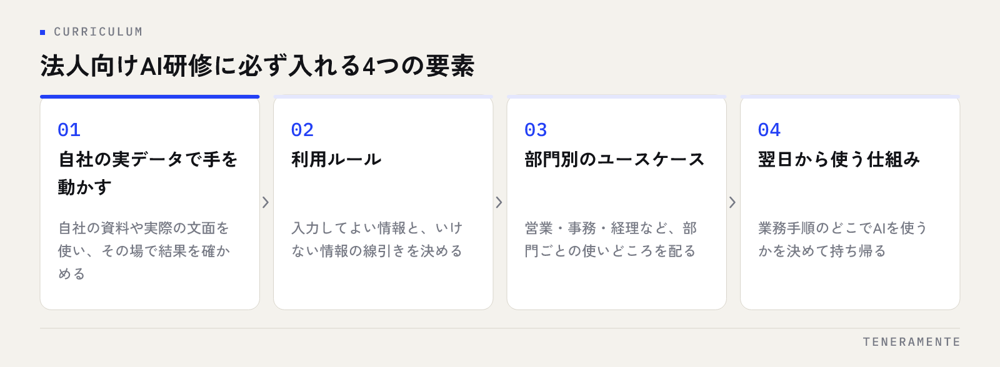

法人向けAI研修で成果が出るかどうかは、講師の知名度や受講時間ではなく、自社の実データで手を動かし、翌日から使う仕組みまで設計されているかで決まります。ChatGPT・Claude・Gemini などの生成AIは、一般論のデモを眺めただけでは業務に入ってきません。この記事では、中小企業がAI研修を「受けて終わり」にしないための研修の選び方と、研修後の定着設計を整理します。
📌 この記事の結論
法人向けAI研修は、講師や時間数ではなく、自社の実データで手を動かし、利用ルールと翌日から使う仕組みまで設計されているかで選びます。前後の設計が抜けた研修は、当日限りのイベントで終わりがちです。
01AI研修が“受けて終わり”になる典型パターン
多くの会社で起きているのは「研修当日は盛り上がったのに、翌週には誰も開いていない」という状態です。原因はほぼ決まっていて、研修の中身より研修の前後の設計が抜けていることにあります。
- 一般的なデモを眺めるだけで、自社の業務や資料に一度も触れない
- 「どこまで入力してよいか」の利用ルールがなく、現場が怖くて使えない
- 全部門を一括で集めた結果、誰の業務にも刺さらない内容になる
- 研修後に質問できる相手も、振り返る場も用意されていない
- 経営者や管理職が受講せず、「使っていい空気」が生まれない
逆に言えば、この5点を潰しておけば、研修は定着しやすくなります。研修会社を比較する前に、まずこの構造を押さえておくと選定の軸がぶれません。AI導入全般のつまずきについては中小企業のAI導入が失敗する7つのパターンと回避策も参考になります。
02カリキュラムに必ず入れるべき4つの要素
以下の4つが入っているかを確認してください。1つでも欠けると、研修は当日限りのイベントになりがちです。

自社の実データで手を動かす
議事録や見積書、問い合わせメールなど、普段の業務で実際に扱っている資料を持ち込み、その場でAIに読ませて要約や下書きを作らせます。汎用のサンプルでは「うちの場合はどうなる？」が解消されず、翌日に持ち帰れません。
利用ルール（入力してよい情報の線引き）
顧客の個人情報、未公開の財務情報、取引先の機密。何を入力してよく、何を入力してはいけないかを研修の中で明文化します。ルールは禁止事項の羅列ではなく「これは入れていい」という許可の形で示すと、現場が安心して使い始めます。
部門別のユースケース
営業なら提案書の骨子、事務なら定型メールの整形、経理なら仕訳のチェック観点の洗い出しなど、部門ごとに「明日やる作業」に落とします。
翌日から使う仕組み
うまくいったプロンプト（AIへの指示文）を型として保存する場所、困ったときに聞ける窓口、翌月の振り返り日。この3つを研修の最後に決めます。
03法人向けAI研修の3つの型と向き不向き
法人向けAI研修は、大きく3つの型に分かれます。自社の目的に合う型を先に決めると、研修会社の比較が楽になります。
| 研修の型 | 向いている会社 | 注意点 |
|---|---|---|
| 一斉講義型 | まず全員の認識をそろえたい | 業務への接続が弱く、単独では定着しにくい |
| ワークショップ型 | 部門ごとに実務で使い始めたい | 実データの準備と少人数編成が前提 |
| 伴走型（研修＋月次支援） | 使い続ける状態まで持っていきたい | 費用は内容次第。社内の推進役が必要 |
一斉講義型で認識をそろえ、ワークショップ型で部門ごとに手を動かし、伴走型で定着まで持っていく、という組み合わせが基本形です。最初から全社一斉のワークショップを狙わないことが、中小企業では特に大切です。
04研修会社を比較する6つのポイント
候補を比較するときは、料金表より先に次の点を確認してください。
- 事前ヒアリングがあるか。業務資料を見せたうえでカリキュラムを組む会社は、実データ型の研修ができます
- 教材が汎用テンプレートか、自社向けに作り直されるか
- ChatGPT・Claude・Gemini など複数のツールを扱えるか。1つに固定されると、契約変更のたびに学び直しになります
- 利用ルールの策定まで含むか、それとも「使い方」だけか
- 研修の先にある RAG（Retrieval-Augmented Generation：社内データ検索）や自動化の実装まで、同じ相手に相談できるか
- 研修後の定着支援（月次の伴走など）があるか
確かめ方
問い合わせの段階で「うちの議事録を使って研修できますか」と聞いてみてください。具体的な進め方がすぐ返ってくる会社は、実データ型の研修に慣れています。
05研修前に社内で決めておくこと
研修の効果は、申し込む前の準備でほぼ決まります。
- 対象部門と、その部門の代表的な業務を1〜2つ選ぶ（「全部」は選ばない）
- 持ち込む実データを決め、氏名や金額など不要な情報は事前に伏せておく
- 利用ルールの叩き台を経営側で用意する（研修中に完成させればよい）
- 「研修の翌月末までに何をしているか」を受講者と合意しておく
- 経営者か管理職が必ず同席する
この準備があるだけで、研修当日の質問が「AIとは何か」から「この資料でどうやるか」に変わります。準備に自信がなければ、この段階から研修会社に相談して構いません。用途の棚卸しから始める考え方は社内へのAI導入、最初の一歩の決め方にまとめています。
06研修後の定着設計：翌日から使い続ける仕組み
定着とは「思い出したときに使う」ではなく、業務手順の中にAIを使う工程が組み込まれている状態です。研修後は次の運用を回してください。
- うまくいったプロンプトを共有フォルダやチャットに集め、部門ごとの「型」に育てる
- 週に一度、短い共有の場で「使った場面・使えなかった場面」を出し合う
- 効果は売上ではなく、作業にかかった時間の増減で測る
- 月に一度、ルールとユースケースを見直し、使われていない用途は外す
- 「同じ質問が何度も出る」「同じ作業の下書きを毎日頼んでいる」が見えたら、次の段階へ
最後の項目が、研修から先に進む合図です。同じ質問が繰り返されるならRAG、同じ作業の繰り返しなら自動化やアプリ化が候補になります。どちらに進むにしても、研修で決めた利用ルールと、部門ごとに育てたプロンプトの型がそのまま土台になります。研修の成果物は個人の手元ではなく、社内で誰でも開ける場所に残しておいてください。
07よくある質問
研修は全社一斉と部門ごと、どちらがよいですか？
経営者や管理職も受講する必要がありますか？
研修だけを単発で依頼することはできますか？
08まとめ：研修は「設計」で選ぶ
法人向けAI研修を選ぶ軸は、3つに集約できます。実データで手を動かせるか、利用ルールと部門別ユースケースが含まれるか、翌日から使う仕組みと定着支援まで設計されているか。この3つを満たす研修なら、会社の規模にかかわらず「受けて終わり」になりにくくなります。
TENERAMENTEは名古屋のAI開発企業として、AI活用支援で導入設計・研修・RAG構築・業務自動化・月次の定着支援を、必要な部分だけ組み合わせてご依頼いただける形にしています。研修はChatGPT・Claude・Gemini を御社の実際の業務資料で扱うワークショップ形式で、研修だけの部分的なご依頼も可能です。初回相談は60分無料ですので、現状の用途の棚卸しからで構いません。お問い合わせからご相談ください。